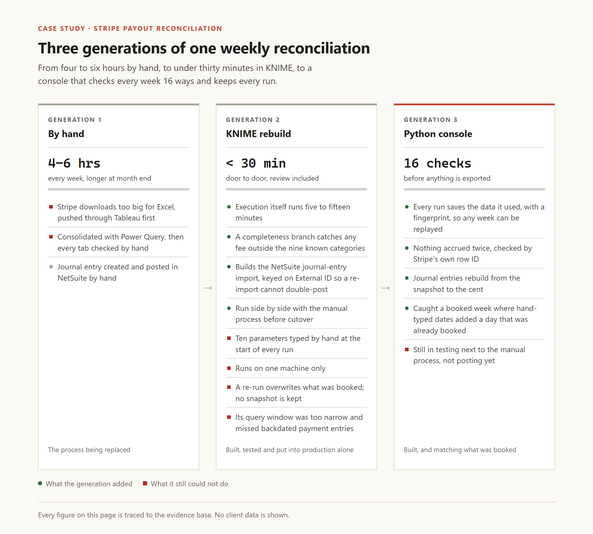
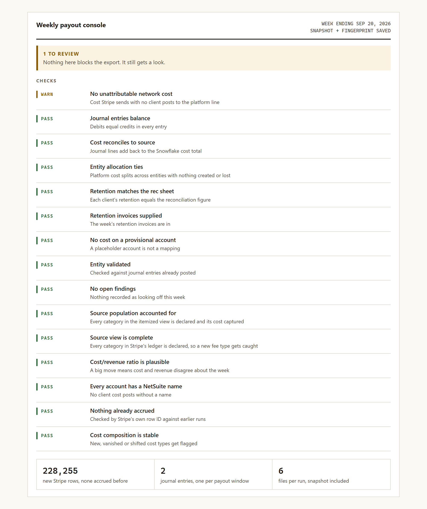

Case study
Three rebuilds of one weekly reconciliation
I rebuilt our weekly Stripe reconciliation three times: 4 to 6 hours by hand, under 30 minutes in KNIME, and now a console that checks 16 things before anything is exported.
- Role
- Built the KNIME version alone and specified the console. I decide what it has to produce and check the output. Claude wrote the console's code.
- When
- KNIME first, then the console in September 2026, still in testing
- Tools
- Snowflake, SQL, KNIME, Python, NetSuite, Claude
- Results
- 4 to 6 hours down to under 30 minutes · 16 checks before export · caught a booked week with an extra, already-booked day
The problem
Every client gets paid on its own week. Some run Monday to Sunday and some run Sunday to Saturday, and they're spread across five timezones, so every transaction has to land in the right client's week before anything gets booked. That's hundreds of thousands of lines in a single week.
By hand it took me 4 to 6 hours every week, and longer at month end.
First I'd download the reports from the Stripe website, and they were huge, so that alone took a long time. The CSVs were too big to fully load in Excel, so I loaded them into Tableau workbooks to transform and filter them. That's where the client timezone matching lived at first, as a calculated field.
Then I'd export from Tableau to Excel as separate reports, a consolidated workbook pulled them together with Power Query, and then the double-checks. Did I filter the dates right, and did every tab pull and update? There were more than 10 tabs, and that's my count from memory.

The first rebuild: KNIME
I rebuilt it in KNIME first. It took about two months, and that's my guess, not something I tracked. But testing took longer than building.
- The queries pull one extra day on each side of the week, then a filter trims every row back to its own client's week.
- Rows that belong to a client get cut on the client's local day and rows that don't get cut on UTC. I went back and checked all 12 UK queries, and it was 6 and 6.
- I moved client attribution out of the spreadsheet formulas and into the query, and later collapsed nine categorization queries into one.
- One branch only catches fees that don't fit the nine categories I knew about. My note on it says "in case any additional fees pop up," and it caught the per-auth fee the summary had been leaving out.
- Another workflow builds the NetSuite journal entry import. Every line has an External ID, so if the import runs twice NetSuite updates it instead of booking it twice.
Once it's started it runs in 5 to 15 minutes. Door to door, with the typing and the review, it's under 30 minutes.
Why I rebuilt it again
- It only runs on my machine, because the file paths point at my desktop and a shared drive.
- A re-run overwrites whatever was booked, so there's no way to see what we booked, what Stripe says now and what moved in between.
- Every run starts with 10 parameters typed in by hand, dates included, and nothing checks them.
- The US workflow has 10 copies of the same component, and all 12 of its database nodes are flagged deprecated by the vendor.
- A reconciliation query's activity window was too narrow, and it had been missing backdated payment entries since January, about $110K of them.
The console

So I rebuilt it again, as a Python console. It pulls the week's Stripe costs from Snowflake, runs them through an engine and writes the NetSuite import files: two journal entries, one per payout window, plus a payments import.
- It checks 16 things before it lets me export, like every fee being categorized, the journal entries balancing, cost reconciling back to the source, and nothing being accrued twice.
- When I override a check, the reason gets written into the run log right next to the numbers it excused.
- Every run saves the exact data it used with a fingerprint, so I can replay any week later even though Snowflake keeps changing.
- It checks every row against earlier runs by Stripe's own row ID. For the week ending September 20 that was 228,255 new rows and none that had been accrued before.
- Each run writes six files: the journal entry import, the payments import, a summary workbook, a workpaper, the run log and the snapshot.
How I know it works
- I ran the KNIME version side by side with the manual one and compared them line by line. Sometimes the new one was wrong, and sometimes the manual process had been wrong for months and nobody noticed.
- The console is running next to the manual process too, and the week ending September 20 matches what was booked.
- Rebuilding the journal entries from the saved snapshot matched 14 of 16 client groups to the cent. The other two were a $0.03 fee with no account mapped and $0.01 of rounding.
- Running next to the manual process, the console exposed an error in one week's booked entry. Hand-typed date windows had given each week range an extra day that was already booked. I flagged it and it got fixed.
Results
- The week went from 4 to 6 hours by hand to under 30 minutes door to door.
- I built a true-up view for costs and credits that show up once a week has been booked. It surfaced those backdated entries, and the find drove a reclassification at month-end close.
- The Stripe cost dashboard I built alongside it surfaced a per-authorization fee the previous workflow had never pulled or booked. I fixed the dashboard's fee handling, and the fee gets booked going forward now.
Limits and what's next
- The console isn't posting yet. It's still being tested against the manual process.
- An override records why I let a check through, but it doesn't fix anything. A fee I overrode stayed unmapped, and that check will fail every week until I add the mapping.
- Stripe doesn't send all of its fee data into Snowflake, so some fees can't be tied to a client. The console posts those to the platform line and warns me instead of guessing.
- Posting straight into NetSuite isn't built. It writes import files and a person still imports them.
- The cost dashboard is supposed to replace the per-client workbooks, but they haven't been retired yet.
How these numbers are sourced
Counted from the KNIME workflow files: the 12 UK queries and their 6 and 6 split, the widen-then-trim filter, the nine-category completeness branch and its note, the nine queries collapsed into one, the journal entry import and its External IDs, the 10 typed parameters, the 10 copied components, the 12 deprecated nodes, the hardcoded paths and the overwriting outputs.
Read from one console run, the week ending September 20, 2026, through an extract with no client names or dollar amounts: the 16 checks, the snapshot and fingerprint, 228,255 new rows, the 14 of 16 groups rebuilt to the cent, the six exports, the override that didn't remap, and what isn't built.
My own account: 4 to 6 hours before and what they went into, under 30 minutes door to door after, 5 to 15 minutes of run time, the side-by-side testing, the per-auth fee fix, the console matching September 20, the September 13 catch, the dashboard and its per-auth fee, the true-up view, and that Claude writes the code.
Estimates, stated as estimates: more than 10 tabs in the old workbook, about two months to build and test the KNIME version, and about $110K of backdated entries, rounded from Stripe.
The reclassification was read from Stripe. The hundreds of thousands of lines a week across five timezones is my own account.